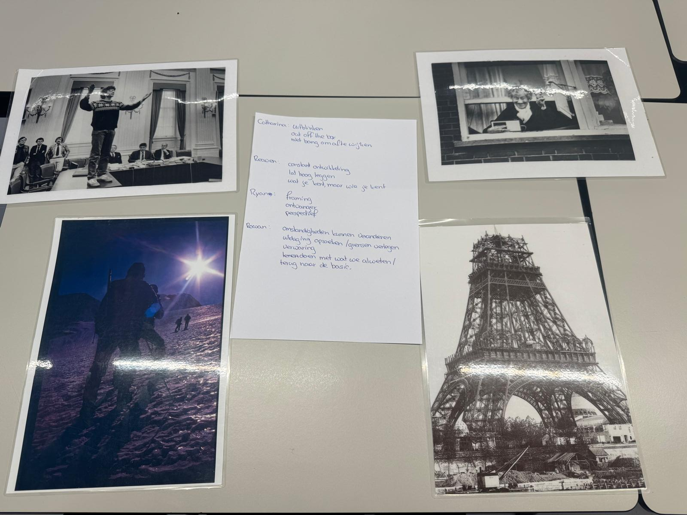

Home | Assignments | Modellenschema | Verslag en Reflectie Tussengesprek | Boekbesprekingen | Korte Reflecties per Vak | Lesopdrachten | Eind Reflectie
Index¶
- Index
- Verandering in Organisaties
- Essentie
- IND.md
- Relatie met Veranderkunde
- Relatie met andere modellen
- Zelfreflectie
Metafoor¶
Oefening in de klas¶
We hebben met zn vieren een plaatje gekozen als metafoor voor de minor.

Hierover gaan we sleutelwoorden opnoemen en kijken naar overeenkomsten en verschillen:
| Wie | ||||
|---|---|---|---|---|
| Catharina | Uitblinken | Out of the box | Niet bang af te wijken | |
| Rowan | Omstandigheden | Uitdaging opzoeken | Grenzen verleggen | Terug naar de basics |
| Reaven | Constant ontwikkeling | Lat hoog leggen | Wat je kent, maar wie je kent | |
| Ryan | Framing | Ontvanger | Perspectief |
Overeenkomsten:¶
- Ambitie
- Strijdlustig
- Creativiteit
Verschillen:¶
- geen?
Essentie¶
Door associatief bezig te zijn krijg je een ander soort input. In plaats van te vragen waar de minor voor staat krijgen we een soort meta gesprek, dat trans-lateraal praat. Alsof je twee parallel kanalen hebt waarin je hetzelfde zegt maar in een andere taal. Hierdoor is het niet direct verbonden aan de uitkomst.
Wat zou nou het nut kunnen zijn van werken met metaforen?¶
- Metaforen versimpelt de omschrijving van iets.
- Loslaten fixed mindset, maakt out of the box denken makkelijker.
- Metaforen verduidelijken je context van het perspectief.
- Het vervaagt bias.
- Associatief denken, je kan hele verhalen overbrengen in een compacte wijze."Rome is niet in een dag gebouwd."
- Betrokkenheid, emoties betrekken mensen, rationele gedachten niet.
Hoe kunnen ze tegenwerken?¶
- Het associatief denken kan ook zijn eigen leven gaan leiden bij de ontvanger.
Concluderend¶
Door metaforen te gebruiken in veranderkunde; Dissocieer je eerst met het onderwerp, om vrij te breken van de vooringenomen ideëen. Om dan juist weer vrij te associëren.
Relatie met Veranderkunde¶
In organisaties is het handig voor brainstorming, ook voor projecten die flink doorgesproken zijn. Ook situaties waar geen uitweg lijkt te zijn kan wat lucht krijgen
Een intressant metafoor wat ik ook al noemde
in
Ram Dass - Be here now
was dat van Alan Watts, over het leven en bewustzijn;
Hij vergeleek realiteit met de ui, de simpele ui waar we zo graag mee koken.
Hoe dan? hoor ik je al afvragen, nou simpel.
Hij stelde dat je welliswaar door het leven te bestuderen een laag kon weg trekken, en nog een, en nog een. Alleen het probleem ermee is dat je eigenlijk nooit bij de kern komt, het maakt niet uit hoe lang je blijft gaan, uiteindelijk zal je altijd gewoon nog een schil er af trekken.
Dit is denk ik wel een van de beste metaforen die ik ken. Hopelijk vind u hem ook fijn.
Relatie met andere modellen¶
Zelfreflectie¶
Zelf kende ik metaforen wel, maar ik had geen idee wat voor een impact ze kunnen hebben. Ik had altijd een oom van mijn vader, Oudoom van mij dus, en die kwam altijd langs om "gezegden" te delen. Deze zijn vandaag de dag niet zo in trek meer, maar als ik nu begrijp wat ze eigenlijk waren dan vind ik ze plots heel intressant geworden.
Als tool om iets simpels zonder toegevoegde emotie uit te leggen is het een heel bijzonder en handig gereedschap en hebben ze zeker plek in mijn toolkit.